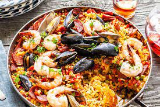

Paella Recipe

Ingredients:
- large pinch saffron strands
- 1 vegetable or chicken stock cube, made up to 600 mL
- 3 tbsp olive oil, plus extra for drizzling
- 15g chorizo, roughly chopped
- 500g boneless, skinless chicken breasts or thighs (or a mix), chopped
- 1 onion, finely chopped
- 3 garlic cloves, finely chopped
- 1 red pepper, deseeded and chopped
- 2 tsp paprika
- 250g Spanish paella rice
- 4 medium tomatoes, roughly chopped
- 75g frozen peas
- 250g cooked prawns with shells on (thawed if frozen) and rinsed
- small handful flat-leaf parsley, chopped, to serve
- chopped lemon wedges, to serve
Steps:
- Stir the saffron strands into the stock and set aside to infuse while you prepare the rest of the paella.
- Heat 1 tbsp oil in a paella pan or a large deep frying pan with a lid. Tip in the chorizo and fry for about 3 mins until crisp and the oil has been released. Remove the chorizo and drain on kitchen paper, leaving the oil in the pan.
- Stir the chicken into the pan and fry over a high heat for 7-8 mins, or until the meat is golden and cooked through. Transfer the chicken to a bowl and set aside.
- Pour another 1 tbsp of oil into the pan, tip in the chopped onion and garlic and stir-fry for 4-5 mins, until softened and just starting to colour. Stir in the pepper and paprika with the remaining tablespoon of oil and stir-fry for a further 1-2 mins. The pan should have lots of crispy, brown bits on the bottom, which will all add flavour.
- With the heat still quite high, quickly stir in the rice so it is well-coated in the oil, then pour in the saffron-infused stock plus 450ml boiling water, scraping up the sticky brown bits from the bottom of the pan with a wooden spoon.
- Return the browned chicken pieces to the pan, then add the chopped tomatoes. Cover the pan and cook on a medium heat for 10 mins, stirring once or twice. Scatter the peas, prawns and fried chorizo over the top, cover again and leave to cook a further 5-10 mins, or until the rice is just cooked and most of the liquid in the pan has been absorbed.
- Remove the pan from the heat, put the lid on and leave to rest for 5 mins. Stir a few times to mix the ingredients, season to taste and scatter over the chopped parsley. Serve with lemon wedges and an extra drizzle of oil, if you like.
Source: Tesco Real Food